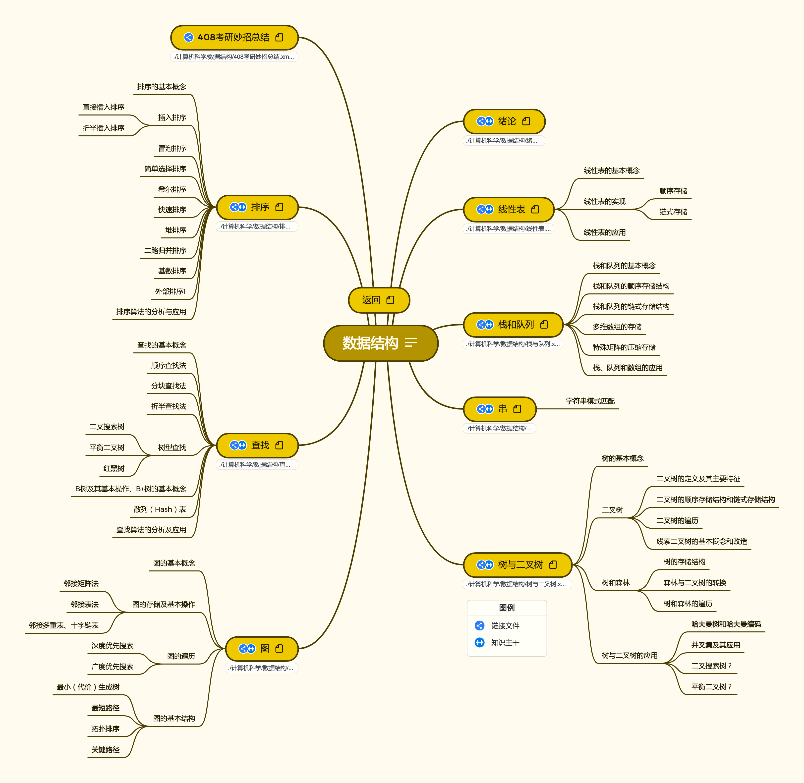

2022.5.23

数据结构按照408考研辅导进行梳理。
绪论
线性表
栈、队列和数组
串
树与二叉树
图
查找
排序
链接: https://pan.baidu.com/s/1yakyIWoCXFwO-HIiEXGK6Q
提取码: abya
如果资源失效请联系我
2022王道数据结构资料 : 2022王道配套视频与习题解答
1. 2022数据结构知识点2. 2022数据结构知识点课件3. 2022数据结构知识点习题讲解4. 2022数据结构知识点思维导图5. 2022数据结构强化直播6. 2022数据结构考研真题讲解7. 2022王道数据结构.pdf（课本）8. 2022数据结构新增考点补充文档.pdf9. 22版数据结构勘误.pdf10. 408真题原题与解析11. 王道2022年计算机专业基础综合考试核心考点及模拟题.pdf12. 王道2022年计算机专业基础综合考试历年真题解析.pdf
2022天勤数据结构.pdf: 2022年408考研辅导教材
github习题同步笔记 : https://github.com/CharlesShan-hub/DataStructureNotes
数据结构与算法(公众号)（电子书）
北邮计算机数据结构课件
算法导论（原书第3版） by Thomas H.Cormen Charles E.Leiserson Ronald L.Rivest Clifford Stein.pdf
算法可视化网站 :https://www.cs.usfca.edu/~galles/visualization/Algorithms.html
多语言高颜值算法可视化网站: https://algorithm-visualizer.org/
按照《2022年数据结构考研复习指导》与相关课程进行整理，完成全部知识框架搭建
按照《2022年数据结构考研复习指导》与相关课程进行整理，进行习题归纳与知识整合